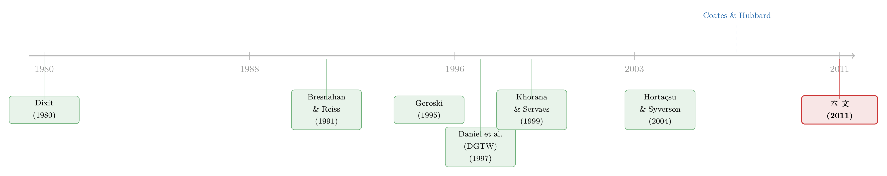

新基金买的，正是你手里那批股票——把基金竞争量成一个数字
本文读的是 Wahal & Wang (2011, Journal of Financial Economics)：他们用「在位基金与新进基金在持仓上的重叠程度」当作竞争强度的尺子，发现 1998 年之后，重叠越高的在位基金，越会调低管理费、流失资金、跑输基准、最终退场——但投资者并没有因此省下钱，因为基金把降下来的管理费，从分销费里又收了回去。
1 一个被反复争论、却几乎没被「测量」过的问题
先抛一个看似无聊、实则吵了几十年的问题：共同基金市场，到底算不算一个有竞争的市场？
按常识，这几乎不该是个问题。1980 到 2008 年间，美国主动型国内股票基金的资产以每年 16% 的复合增速膨胀；到 2008 年，光是国内股票就有 $2.8 trillion 的规模、近 4,000 只基金在抢同一批投资者的钱。这么多家在同一个赛道里卷，怎么会不竞争？
可偏偏就有一大批人——而且是很有分量的人——不这么认为。Coates and Hubbard (2007) 在一篇梳理基金业产业组织的雄文里指出：自 2003 年以来，针对基金「收费过高」的集体诉讼急剧增多，包括 Vanguard 创始人 John Bogle、耶鲁首席投资官 David Swensen、前纽约州长 Eliot Spitzer 在内的一众业内与监管人士，都公开断言基金的顾问费「根本不反映一个竞争性市场该有的样子」。这场争论甚至一路打到了最高法院（著名的 Easterbrook 判决，以及 Posner 的异议意见，都把 Coates and Hubbard 的论证当作弹药）。
争议的核心其实很朴素：如果市场真有竞争，费用就该被压下去、跑得差的基金就该被淘汰。可现实里，费用看起来很「黏」，烂基金似乎也活得好好的。Gil-Bazo and Ruiz-Verdu (2009) 甚至发现，1961–2003 年间，业绩越差的基金反而收费越高——竞争「没能把那些迎合迟钝投资者的基金赶出市场」。
所以问题不在于「有没有人在竞争」，而在于我们能不能拿出直接证据，证明竞争确实在改变在位者（incumbents）的价格、收入、成本、业绩与生死。Wahal and Wang 说：奇怪的是，几乎没有人做过这件事。这篇文章，做的就是这件事。
2 竞争的尺子：把「产品」拆回「原料」
要研究竞争，第一步绕不过去：怎么定义「谁在和谁竞争」？
这其实是产业组织里出了名的难题（Berry and Reiss, 2007）。作者打了个特别好懂的比方：一座城市新来了一支棒球队，它到底是在和原有的棒球队竞争，还是和所有职业球队竞争，甚至和所有「休闲娱乐方式」竞争？基金也一样——一只新成立的小盘成长基金，它的对手是其它小盘成长基金，还是所有小盘基金、所有成长基金，乃至所有基金？
传统做法是按风格（style）分组：同风格的算竞争对手。但作者指出这条路有两个硬伤。其一，风格划分本身就很武断——凭什么一只小盘价值基金不会和小盘成长基金抢客户？其二，不同数据库（CRSP 和 Thomson CDA/Spectrum）的风格定义都不一样，你都不知道该信哪个。何况 Elton, Gruber, and Busse (2004) 早就发现，哪怕在「极度同质」的标普 500 指数基金里，费率和业绩都天差地别。
于是真正关键的一步来了。作者换了个视角：
如果把基金组合（portfolio）看作「产品」，那么基金费用就是这件产品的「价格」，而持有的股票就是生产这件产品的「原料」。
这是一个漂亮的产业组织类比。两件产品像不像、可不可替代，本质上取决于它们用的原料像不像。于是，两只基金的持仓重叠程度，就成了它们竞争激烈程度的天然代理变量——而且这个变量完全不依赖任何人为的风格分类。作者借用 Friedman (1953) 的实证主义立场：我们不需要假设边际投资者真的看得见全部持仓，只要投资者「表现得仿佛」他们看得见、并据此判断基金可替代性，这把尺子就站得住。
接着，一个自然的问题是：怎么把「重叠」算成一个数字？
3 一个数字的诞生：MVO 的构造
设季度 \(t\) 初有 \(M\) 只在位基金（\(i=1,\dots,M\)），季度内有 \(N\) 只新基金进入（\(j=1,\dots,N\)）。令 \(\tau\) 表示一只同时出现在在位基金和新进基金组合里的重叠证券。对每一个「在位—新进」配对里的每只重叠证券，作者先定义一个伪组合权重 (pseudo portfolio weight) \(w_{\tau,t}\)：
这里 \(P_{\tau,t-1}\)（\(P_{\tau,t}\)）是重叠证券 \(\tau\) 在季度初（季末）的价格，\(S^{E}_{\tau,t}\) 是该证券在新进基金组合中的股数，\(S^{I}_{\tau,t-1}\) 是它在在位基金组合中的股数；\(g\) 遍历在位基金组合里的所有证券。作者对新进基金用季末（\(t\)）、对在位基金用季初（\(t-1\)）的时间约定，是因为缺乏精确的进入时点信息，只能假设进入发生在季末。
直觉上，第一项是重叠的「美元浓度」，第二项是「这只股票对在位者有多要紧」的权重。作者举了个干净的例子：若新进基金在某只股票 XYZ 上有 $2 million 的仓位、在位基金有 $10 million，则第一项是 0.2；若在位基金总组合是 `\(200 million`，则 XYZ 的权重是 `0.05`，于是 \)w_{\tau,t}=0.2\times0.05=0.01$。
然后把这些权重在某个在位—新进配对内对所有重叠证券求和，再跨所有配对取平均，就得到在位基金层面的重叠度 \(MVO_{i,t}\)：
$$MVO_{i,t} = \frac{1}{N}\sum_{j=1}^{N}\sum_{\tau=1}^{y_{i,j,t}} w_{\tau,t}$$
但真正关键的一步在于作者对这个平均的反省。设想一种极端情形：某在位基金和新进基金 \(j=1\) 的重叠是 100%，但和 \(j=2,3\) 的重叠是零。一平均，\(MVO_{i,t}\) 只剩 0.33——可 \(j=1\) 这一只对手，可能已经足以把在位者的收入打掉一大块。平均会把这种「单点强冲击」稀释掉。于是作者又额外构造了一个截断版本 \(TruncMVO_{i,t}\)，不再被「众多零重叠配对」摊薄，专门留住那些高重叠的对手。两个度量并用，正反互证。
这把尺子最妙的地方在于它只可能低估、不会系统高估竞争：作者承认它无法捕捉现金管理服务捆绑等其它差异化手段，所以是一把「不完美但无偏」的尺子。而且若它纯属噪声（即竞争假说为假），那它就不该和任何因变量相关——可结果偏偏处处相关。
4 识别策略：为什么「盯着在位者」反而干净
行文至此，必须正面回答一个识别上的隐忧：进入（entry）本身是内生的。 新基金选择在哪个赛道开张、收多少费，显然是看着预期利润下的注。如果直接研究新进基金的定价，内生性会把因果关系搅成一团。
作者绕开它的办法，是这篇文章在识别上最聪明的一招：
进入对新进基金自己是内生的，但对在位基金而言，进入只是一个外生冲击——在位者无从选择谁来跟它抢生意，它只能被动反应。所以只要我们盯着在位者的反应来看，就把进入的内生性挡在了门外。
为了让这个「外生冲击」更干净，样本构造上还加了几道筛子：第一，剔除同一基金家族内部的在位—新进配对——家族内部为避免自相蚕食（cannibalization），进入是内生压低的，会污染推断；而来自竞争对手家族的进入，才是对在位者真正的外生冲击。第二，要求新进基金存在至少一年才被当作在位者，给竞争过程留出生效的时间。第三，要求持仓数据在基金成立日附近（CRSP 与 CDA/Spectrum 成立日相差不超过两个季度）可得，以准确测量重叠。
还有一个绕不开的事实，作者把它放到了最显眼的位置：所有效应都只在 1998 年之后出现。 对入场数量做的 Chow 检验，在 1998 年指向一个结构性断点（用 1997 或 1999 当断点结论几乎不变，所以 1998 本身并不「神奇」）。为什么早期没有竞争效应？答案藏在「进入是内生的」这件事里。Geroski (1995) 总结浩繁的产业组织文献后指出，进入往往成「波」涌来，常在一个市场生命周期的早期见顶，并最终把利润和价格推向长期竞争水平。基金业正是如此：
- 1981 至 1990 年代中期，基金数量和资产持续膨胀，进入是有利可图的，新进者不必和在位者死磕；
- 到 1990 年代末，行业逐渐饱和，进入的利润空间被压缩，新进者只能靠和在位者抢收入（资金流 × 费率）、抢原料（推高交易成本）才活得下去——这正是论文结果的本质。
一个简单到近乎优雅的佐证：「上一年行业收入」与「本年进入者数量」的相关系数，在 1998 年前是 0.96，1998 年后骤降到 0.55。这与 Bresnahan and Reiss (1991) 的「门槛进入（threshold entry）」逻辑高度一致——当进入不再追着利润跑，竞争才真正开始咬人。
5 数据
数据骨架是三块拼起来的：CRSP Mutual Fund 数据库（收益、费用、资产、申购费、换手率等）、Thomson Financial CDA/Spectrum 持仓数据库（用来算重叠），二者经 Wharton 的 MFLINKS 文件连接。样本是所有主动型（非指数）股票基金，涵盖激进成长、成长与小盘成长、收益、成长与收益、特殊行业等 CRSP 风格，剔除平衡、债券、货币市场、国际股票基金。
- 单位：基金层面（因为持仓是按基金而非份额类别披露的；对各份额类别的变量做 TNA 加权）。
- 样本期：1981–2005（持仓库始于 1980，需前一年算重叠；末期截到 2005 是因为若干因变量需要两到三年的事后数据）。
- 样本量：
4,116只独立基金。 - 一个重要细节：CRSP 的管理费数据只从 1998 年才开始，且是扣除费用减免（waivers）之后的净值。由于费用减免本身就值得研究，作者另外从 Lipper Analytical Services 购买了一份含各基金减免名称与幅度的数据库（同样始于 1998，先用 CUSIP、再用基金名手工匹配）。
6 主要结果：价格在降，但你没省到钱
作者沿着「竞争性市场该有的特征」一项项检验。
其一，价格竞争（伯特兰竞争, Bertrand competition）是真的。 1998 年之后，管理费的变化与事前的重叠度显著负相关——重叠越高的在位者，越会主动降管理费。不仅如此，高重叠的在位者更可能动用（名义上「临时」的）费用减免，而且动用的幅度更大。耐人寻味的是，这些减免往往在随后几年被延续，事实上变成了永久降价；而当减免被取消时，大约有一半是因为管理费被永久性下调了。就管理人能直接控制的价格（管理费）而言，价格竞争相当强劲。
其二，但投资者并没有因此省下钱。 这是全文最反直觉、也最重要的一个反转。非管理费用与重叠度无关；把管理费和非管理费用加总成总费用率（expense ratio），重叠度与总费用率的变化之间没有任何关系。降下去的管理费，去哪了？答案藏在分销成本里。申购费（loads）的变化确实与重叠度负相关，但自 12b-1 法规问世后，基金把分销成本从申购费转向了 12b-1 费——而 12b-1 费的变化与重叠度正相关。作者给的机制是：当基金因竞争而流失市场份额时，它会试图靠加大分销活动来招揽新客户；而分销渠道有限，结果就是 12b-1 费被推高。这与 Walsh (2004)、Casavecchia and Scotti (2009) 的发现一致。换句话说，竞争带给消费者的好处，被一笔「补偿性差额（compensating differentials）」抵消掉了。
这是给「基金市场有竞争」这个结论的一个重要警告：价格竞争确实在运转（管理费在降），但好处未必直达消费者。看总费用率，你会以为什么都没发生；只有把费用拆开，才看得见暗流。
其三，数量竞争也成立。 把资金流（flows）对滞后的重叠度回归，重叠越高的在位者，未来资金流越低，且这种负相关对业绩差的在位者尤其强烈。具体地：对一只过去一年业绩处在最差五分位的基金，\(MVO_{i,t}\) 每上升一个标准差，次年资金流减少 6.1%。同样，这些效应只在 1998 年后出现。
其四，业绩也跟着掉。 用进入后 36 个月估计的基金 alpha 对滞后重叠度回归，1998 年后，高重叠在位者的事后 alpha 更低——\(MVO_{i,t}\) 每升一个标准差，后续 alpha 每月下降 5 个基点。作者还用 Daniel, Grinblatt, Titman, and Wermers (1997) 的特征基准法（DGTW）做稳健性检验，把持仓收益分解为特征选择、特征择时与平均风格三部分；若 alpha 下降确实源于对底层证券的争抢，那么重叠度就该与特征选择（characteristic selectivity）那一块负相关——结果正是如此。交易成本一侧，用 Kacperczyk, Sialm, and Zheng (2008) 的「收益缺口（return gap）」度量，进入后第一、二年的收益缺口与重叠度弱负相关。
其五，最达尔文的一项——退场。 高重叠的在位者退出率显著更高。进入后的五年里，\(MVO_{i,t}\) 最高十分位的在位者退出率为 22.1%，最低十分位仅 7.1%。在 1998 年后的多元设定里，\(MVO_{i,t}\) 每升一个标准差，隐含退出概率从基准的 10% 升到 12.1%。
最后还有一个值得留意的调节效应：所有这些竞争压力，对规模更大、所属家族更大的在位者都被「缓和」了（但没有被消除）。 这并不意外——规模带来规模经济，也带来守住地盘的能力。（关于大家族如何在内部腾挪以应对竞争，可参见《当「对手」就坐在自家屋檐下：被动基金如何逼着主动基金跑得更快》。）
7 文献脉络
这篇文章站在两条河流的交汇处。
一条是产业组织里关于「进入」的经典文献。Dixit (1980) 谈投资如何威慑进入，Schmalensee (1982, 1983) 讨论先发品牌与广告的进入壁垒，而真正给本文提供识别灵魂的是 Bresnahan and Reiss (1991)——他们用「门槛进入」作为直接测量价格—成本加成的替代方案；Geroski (1995) 则系统总结了「进入成波、早期见顶、最终把利润压向长期竞争水平」的规律。Berry and Reiss (2007) 的综述把进入与市场结构的实证模型做了集大成的梳理。
另一条是基金业自身的竞争研究。Khorana and Servaes (1999) 研究了基金「开张」的决定因素，给出了进入的量级证据；Khorana and Servaes (2004) 发现价格竞争重要，但有个注脚——只有当费率原本高于平均，低费家族才靠降费抢到份额。Hortaçsu and Syverson (2004)、Elton, Gruber, and Busse (2004) 揭示了即便在标普 500 指数基金这种「极度同质」的群体里，费率与业绩也差异巨大；Li (2005) 甚至用结构模型估计，基金靠在不同状态下做产品差异化，能把利润提高近 30%。再往前一步，就是 Coates and Hubbard (2007) 引爆的「基金业到底竞不竞争」之争，以及 Gil-Bazo and Ruiz-Verdu (2009) 那个「业绩越差、收费越高」的谜题。

Wahal and Wang 的位置很清楚：它不发明新理论，而是把产业组织里成熟的「进入—竞争」框架，第一次用一把不依赖风格分类的持仓重叠尺子，结结实实地落到了基金数据上，补上了「进入如何影响在位者的价格、收入、成本、业绩与生存」这个长期空缺的实证环节。（关于基金间竞争如何重塑资本配置的另一视角，可参见《食言的代价：当一只基金，没能守住它在招股书里许下的承诺》。）
8 评论与延伸（Q&A + 研究方向）
(a) 几个可能的疑问
Q：持仓重叠度，凭什么能代表「竞争」？两只基金持仓一样，也可能只是恰好都买了苹果而已。
作者的立场是实证主义的：重要的不是投资者「真的」逐只比对持仓，而是他们「表现得仿佛」会按可替代性做选择。退一步说，若重叠纯属噪声，它就不该和资金流、alpha、退出率系统性相关——可它处处相关，而且符号都对得上理论预期，这本身就是它不是噪声的证据。
Q：为什么效应只在 1998 年后出现？这会不会是数据问题（管理费数据恰好 1998 年才有）凑出来的？
不是。资金流、退出率、收益缺口这些不依赖 1998 年管理费数据的因变量，同样只在 1998 年后显著。作者把它归因于进入的内生性：早期行业扩张、进入有利可图，新进者无需死磕在位者；行业饱和后进入利润枯竭，才被迫与在位者抢食。「行业收入—进入数量」相关系数从
0.96跌到0.55就是旁证。
Q：既然管理费降了，为什么说投资者没受益？
因为总费用率没动。降下去的管理费，被升上来的 12b-1 分销费抵消了。竞争确实压低了管理人直接控制的价格，但通过分销费这条管道，好处被「补偿性差额」吃掉了——这正是本文最重要、也最值得政策制定者警惕的发现。
Q：盯着在位者就能避开进入的内生性，这个识别真的干净吗？
大体干净。逻辑是：进入对新进者内生，但对在位者是外生冲击。剔除家族内配对进一步排除了自相蚕食带来的内生进入。残余担忧在于：在位者的持仓本身也在动（它可能为躲避竞争而调仓），重叠度因而并非完全外生——作者用事件时间、年度汇总等做了稳健性处理，但这条担忧无法被完全消除。
Q：和「主动份额（active share）」这类衡量基金独特性的指标比，重叠度有什么不同？
主动份额衡量一只基金相对基准指数有多独特，是「基金 vs. 市场」；本文的重叠度衡量「在位基金 vs. 具体某个新进对手」，是配对层面的可替代性，且专门服务于「谁在和谁竞争」这个产业组织问题。前者关心选股能力，后者关心竞争结构。
Q：这篇文章对那场「基金费用是否过高」的法律争议，到底站哪一边？
它给的是一个微妙的「双面」答案。一方面，管理费确实随竞争下降、烂基金确实被淘汰，支持「市场有竞争」；另一方面，总费用率纹丝不动，说明竞争的红利没有完全传导给消费者。所以它既不完全支持 Coates and Hubbard 的「竞争充分论」，也不简单站队批评者——它把争论从「有没有竞争」推进到了「竞争的好处流向了谁」。
(b) 几个可能的研究问题与提案
1. 把这把「重叠尺子」搬到公司债基金 / 信用市场。 【经济故事】债券基金的「产品」是信用组合，「原料」是一只只债券。但债券比股票更不流动、持仓更集中、且常有多只债券对应同一发行人——新债券基金进入时对在位者的交易成本冲击可能比股票市场更剧烈（火线甩卖风险）。 【可行性】中。数据可用 eMAXX / Morningstar 债券基金持仓 + TRACE 成交，识别沿用本文的「进入对在位者外生」逻辑。难点在于债券持仓披露频率较低、且需在发行人层面而非单券层面定义重叠。
2. 被动基金与 ETF 的进入，如何冲击主动在位者？ 【经济故事】本文样本止于 2005 年，恰好错过了被动投资的爆发。ETF 进入是一种特殊的「高重叠、超低价」冲击，对在位主动基金的价格与生存压力可能远超本文记录的同类主动进入。 【可行性】高。CRSP + Morningstar 持仓数据延伸到近年即可，ETF 进入时点清晰，识别框架现成。可与《当「对手」就坐在自家屋檐下》的家族内竞争视角对话。
3. 外资基金进入，对本土在位基金的竞争冲击。 【经济故事】当一只海外资管机构在某国市场新设基金，它与本土在位者的持仓重叠，可能因投资风格差异而系统性偏低——这恰好提供了「同一进入冲击、不同重叠强度」的横截面变异，用来检验重叠度作为竞争代理的有效性。 【可行性】中。需跨国基金持仓数据（如 Morningstar Global / FactSet），识别可利用各国对外资开放的政策时点作为准自然实验。
4. 「补偿性差额」是普遍规律还是基金业特例？ 【经济故事】本文最反直觉的发现是：明面价格（管理费）降了，暗处价格（12b-1）升了，净价格不变。这种「降一处、补一处」的模式在保险、银行零售、券商佣金等高分销成本行业是否同样存在？ 【可行性】中。需要能把「价格」拆成核心费用与分销费用两部分的行业数据；银行存款利率 vs. 账户管理费、券商佣金 vs. 数据/通道费都是可行的检验场。
5. 重叠度能否前瞻性地预测基金退出，构建一个「基金生存风险」指标？ 【经济故事】本文已证明高重叠预测高退出率。若把重叠度做成一个实时可算的「竞争压力指数」，能否在基金清盘前给投资者预警？ 【可行性】高。持仓数据公开、退出事件可观测，可直接做样本外的生存分析（Cox 风险模型）。诚实地说，预测精度可能有限——退出还受家族战略、规模等本文已指出的调节因素影响。
9 我的判断与参考文献
贡献。这篇文章最大的价值，是把一个吵了几十年、却几乎只停留在「断言」层面的问题——基金市场竞不竞争——拽到了可测量的实证地面上。那把「持仓重叠」的尺子既简单又深刻：它把产业组织里「产品差异化」这个出了名难缠的概念，巧妙地翻译成了「原料重叠」，从而完全绕开了风格分类的武断。更难得的是，它没有满足于「价格竞争存在」这个让人安心的结论，而是顺藤摸瓜挖出了「补偿性差额」——管理费降了、分销费升了、净费用没变——这个让人不安、但对政策判断至关重要的反转。
对识别的担忧。我最不踏实的两点：其一，在位者的持仓并非外生不变，它完全可能为了躲避竞争而主动调仓，使重叠度内生于在位者的策略反应，这会让「进入是纯外生冲击」的故事打折扣；其二，1998 年这个结构断点被解释为「内生进入饱和」，逻辑自洽且有相关系数佐证，但它终究是事后归因——我们无法排除 1998 年前后另有共同的宏观或监管变化（如 12b-1 使用习惯的演变、退休账户资金的涌入）在同时驱动这些结果。
后续想看到什么。我最想看到的是把这套框架推进到被动投资爆发之后的样本，看 ETF 这种「极端高重叠、极端低价」的进入，是否把本文记录的竞争效应放大到了一个全新的量级；以及把「明降暗升」的补偿性差额，放到费用结构更不透明的信用债基金里去重新检验——那里的「暗处价格」可能藏在交易成本而非 12b-1 里。
参考文献
- Berry, S., Reiss, P. (2007). Empirical models of entry and market structure. In The Handbook of Industrial Organization, Vol. 3, 1845–1886. Elsevier.
- Bresnahan, T., Reiss, P. (1991). Entry and competition in concentrated markets. Journal of Political Economy 99(5), 977–1009.
- Coates, J., Hubbard, G. (2007). Competition in the mutual fund industry: evidence and implications for policy. Working paper, Harvard Law School.
- Daniel, K., Grinblatt, M., Titman, S., Wermers, R. (1997). Measuring mutual fund performance with characteristic-based benchmarks. Journal of Finance 52(3), 1035–1058.
- Dixit, A. (1980). The role of investment in entry-deterrence. The Economic Journal 90(357), 95–106.
- Elton, E., Gruber, M., Busse, J. (2004). Are investors rational? Choices among index funds. Journal of Finance 59(1), 261–288.
- Geroski, P. A. (1995). What do we know about entry? International Journal of Industrial Organization 13(4), 421–440.
- Gil-Bazo, J., Ruiz-Verdu, P. (2009). Yet another puzzle? The relation between price and performance in the mutual fund industry. Journal of Finance 64(5), 2153–2183.
- Hortaçsu, A., Syverson, C. (2004). Product differentiation, search costs, and competition in the mutual fund industry: a case study of S&P 500 index funds. Quarterly Journal of Economics 119(2), 403–456.
- Kacperczyk, M., Sialm, C., Zheng, L. (2008). Unobserved actions of mutual funds. Review of Financial Studies 21(6), 2379–2416.
- Khorana, A., Servaes, H. (1999). The determinants of mutual fund starts. Review of Financial Studies 12(5), 1043–1074.
- Li, S. J. (2005). Financial product differentiation and fee competition in the mutual fund industry. Working paper, AXA Rosenberg Group.
- Schmalensee, R. (1982). Product differentiation advantages of pioneering brands. American Economic Review 72(3), 349–365.
- Walsh, L. (2004). The costs and benefits to fund shareholders of 12b-1 plans. Working paper, Securities and Exchange Commission.
- Wahal, S., Wang, A. (2011). Competition among mutual funds. Journal of Financial Economics 99(1), 40–59.